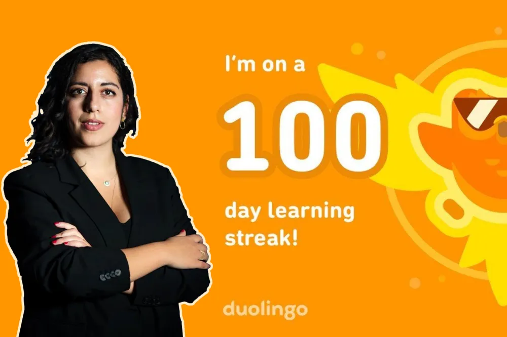

Politik

Mohamsson avslöjar 100 dagar Duolingo-streak
Sveriges utbildningsminister avslöjade förra tisdagen under veckan att hon har lyckats hålla en 100 dagar Duolingo streak igång. Experter som Löken pratade med säger att det här kan vara ett försök från den okända L-ledaren att locka nya unga väljare. Duolingo, som är en av de största onlineplattformarna för att lära sig nya språk, har länge setts som en modern plattform men nu riskerar det ryktet att försvinna. Under presskonferensen avslöjades inte vilket språk Mohamsson hade ägnat sin tid åt men trovärdiga källor har avslöjat för Löken att partiledaren har sin 100 dagar streak på götamål.